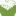
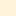

<!doctype html>
<html lang="en">
    <head>
        <meta charset="utf-8">
        <meta http-equiv="X-UA-Compatible" content="IE=edge">
        <meta name="viewport" content="initial-scale=1,user-scalable=no,maximum-scale=1,width=device-width">
        <meta name="mobile-web-app-capable" content="yes">
        <meta name="apple-mobile-web-app-capable" content="yes">
        <link rel="stylesheet" href="css/leaflet.css">
        <link rel="stylesheet" href="css/qgis2web.css">
        <style>
        html, body, #map {
            width: 100%;
            height: 100%;
            padding: 0;
            margin: 0;
        }
        </style>
        <title></title>
    </head>
    <body>
        <div id="map">
        </div>
        <script src="js/qgis2web_expressions.js"></script>
        <script src="js/leaflet.js"></script>
        <script src="js/leaflet.rotatedMarker.js"></script>
        <script src="js/leaflet.pattern.js"></script>
        <script src="js/leaflet-hash.js"></script>
        <script src="js/Autolinker.min.js"></script>
        <script src="js/rbush.min.js"></script>
        <script src="js/labelgun.min.js"></script>
        <script src="js/labels.js"></script>
        <script src="data/FoodDesert_0.js"></script>
        <script src="data/CoreFoodPartners_1.js"></script>
        <script src="data/UrbanHarvestSites_2.js"></script>
        <script>
        var highlightLayer;
        function highlightFeature(e) {
            highlightLayer = e.target;

            if (e.target.feature.geometry.type === 'LineString') {
              highlightLayer.setStyle({
                color: '#ffff00',
              });
            } else {
              highlightLayer.setStyle({
                fillColor: '#ffff00',
                fillOpacity: 1
              });
            }
        }
        var map = L.map('map', {
            zoomControl:true, maxZoom:18, minZoom:12
        }).fitBounds([[38.5504505602,-90.3305551179],[38.6925874473,-90.1156123747]]);
        var hash = new L.Hash(map);
        map.attributionControl.addAttribution('<a href="https://github.com/tomchadwin/qgis2web" target="_blank">qgis2web</a>');
        var bounds_group = new L.featureGroup([]);
        var basemap0 = L.tileLayer('http://{s}.www.toolserver.org/tiles/bw-mapnik/{z}/{x}/{y}.png', {
            attribution: '&copy; <a href="http://openstreetmap.org">OpenStreetMap</a> contributors, <a href="http://creativecommons.org/licenses/by-sa/2.0/">CC-BY-SA</a>',
            maxZoom: 18
        });
        basemap0.addTo(map);
        function setBounds() {
        }
        function pop_FoodDesert_0(feature, layer) {
            layer.on({
                mouseout: function(e) {
                    for (i in e.target._eventParents) {
                        e.target._eventParents[i].resetStyle(e.target);
                    }
                },
                mouseover: highlightFeature,
            });
            var popupContent = '<table>\
                    <tr>\
                        <td colspan="2">' + (feature.properties['County'] !== null ? Autolinker.link(String(feature.properties['County'])) : '') + '</td>\
                    </tr>\
                </table>';
            layer.bindPopup(popupContent, {maxHeight: 400});
        }

        function style_FoodDesert_0_0() {
            return {
                pane: 'pane_FoodDesert_0',
                opacity: 1,
                color: 'rgba(0,0,0,0.0)',
                dashArray: '',
                lineCap: 'butt',
                lineJoin: 'miter',
                weight: 1.0, 
                fill: true,
                fillOpacity: 1,
                fillColor: 'rgba(253,253,132,0.494117647059)',
            }
        }
        map.createPane('pane_FoodDesert_0');
        map.getPane('pane_FoodDesert_0').style.zIndex = 400;
        map.getPane('pane_FoodDesert_0').style['mix-blend-mode'] = 'normal';
        var layer_FoodDesert_0 = new L.geoJson(json_FoodDesert_0, {
            attribution: '<a href=""></a>',
            pane: 'pane_FoodDesert_0',
            onEachFeature: pop_FoodDesert_0,
            style: style_FoodDesert_0_0,
        });
        bounds_group.addLayer(layer_FoodDesert_0);
        map.addLayer(layer_FoodDesert_0);
        function pop_CoreFoodPartners_1(feature, layer) {
            layer.on({
                mouseout: function(e) {
                    for (i in e.target._eventParents) {
                        e.target._eventParents[i].resetStyle(e.target);
                    }
                },
                mouseover: highlightFeature,
            });
            var popupContent = '<table>\
                    <tr>\
                        <td colspan="2">' + (feature.properties['Organizati'] !== null ? Autolinker.link(String(feature.properties['Organizati'])) : '') + '</td>\
                    </tr>\
                </table>';
            layer.bindPopup(popupContent, {maxHeight: 400});
        }

        function style_CoreFoodPartners_1_0() {
            return {
                pane: 'pane_CoreFoodPartners_1',
        rotationAngle: 0.0,
        rotationOrigin: 'center center',
        icon: L.icon({
            iconUrl: 'markers/image2vector.svg',
            iconSize: [91.2, 91.2]
        }),
            }
        }
        map.createPane('pane_CoreFoodPartners_1');
        map.getPane('pane_CoreFoodPartners_1').style.zIndex = 401;
        map.getPane('pane_CoreFoodPartners_1').style['mix-blend-mode'] = 'normal';
        var layer_CoreFoodPartners_1 = new L.geoJson(json_CoreFoodPartners_1, {
            attribution: '<a href=""></a>',
            pane: 'pane_CoreFoodPartners_1',
            onEachFeature: pop_CoreFoodPartners_1,
            pointToLayer: function (feature, latlng) {
                var context = {
                    feature: feature,
                    variables: {}
                };
                return L.marker(latlng, style_CoreFoodPartners_1_0(feature));
            },
        });
        bounds_group.addLayer(layer_CoreFoodPartners_1);
        map.addLayer(layer_CoreFoodPartners_1);
        function pop_UrbanHarvestSites_2(feature, layer) {
            layer.on({
                mouseout: function(e) {
                    for (i in e.target._eventParents) {
                        e.target._eventParents[i].resetStyle(e.target);
                    }
                },
                mouseover: highlightFeature,
            });
            var popupContent = '<table>\
                    <tr>\
                        <td colspan="2">' + (feature.properties['Organizati'] !== null ? Autolinker.link(String(feature.properties['Organizati'])) : '') + '</td>\
                    </tr>\
                </table>';
            layer.bindPopup(popupContent, {maxHeight: 400});
        }

        function style_UrbanHarvestSites_2_0() {
            return {
                pane: 'pane_UrbanHarvestSites_2',
        rotationAngle: 0.0,
        rotationOrigin: 'center center',
        icon: L.icon({
            iconUrl: 'markers/UHSite.svg',
            iconSize: [91.2, 91.2]
        }),
            }
        }
        map.createPane('pane_UrbanHarvestSites_2');
        map.getPane('pane_UrbanHarvestSites_2').style.zIndex = 402;
        map.getPane('pane_UrbanHarvestSites_2').style['mix-blend-mode'] = 'normal';
        var layer_UrbanHarvestSites_2 = new L.geoJson(json_UrbanHarvestSites_2, {
            attribution: '<a href=""></a>',
            pane: 'pane_UrbanHarvestSites_2',
            onEachFeature: pop_UrbanHarvestSites_2,
            pointToLayer: function (feature, latlng) {
                var context = {
                    feature: feature,
                    variables: {}
                };
                return L.marker(latlng, style_UrbanHarvestSites_2_0(feature));
            },
        });
        bounds_group.addLayer(layer_UrbanHarvestSites_2);
        map.addLayer(layer_UrbanHarvestSites_2);
        var baseMaps = {};
        L.control.layers(baseMaps,{' UrbanHarvestSites': layer_UrbanHarvestSites_2,' CoreFoodPartners': layer_CoreFoodPartners_1,' FoodDesert': layer_FoodDesert_0,}).addTo(map);
        setBounds();
        </script>
    </body>
</html>
